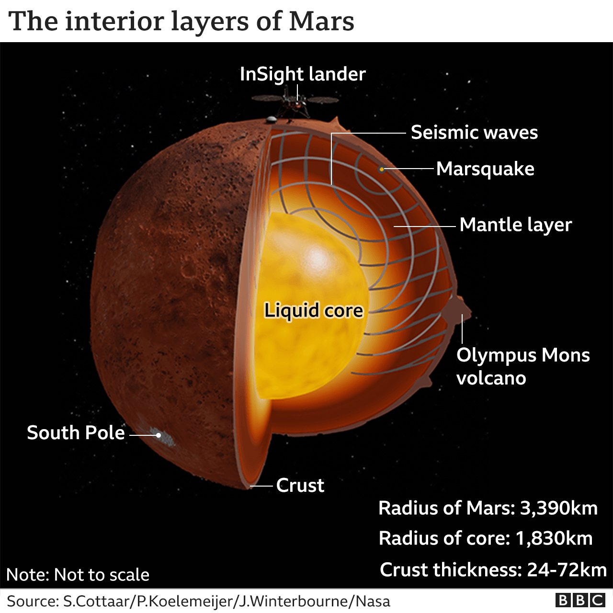

Mars is the fourth planet and the furthest terrestrial planet from the Sun. The reddish color of its surface is due to finely grained iron(III) oxide dust in the soil, giving it the nickname "the Red Planet".[21][22] Mars's radius is second smallest among the planets in the Solar System at 3,389.5 km (2,106 mi). The Martian dichotomy is visible on the surface: on average, the terrain on Mars's northern hemisphere is flatter and lower than its southern hemisphere. Mars has a thin atmosphere made primarily of carbon dioxide, and two irregularly shaped natural satellites, Phobos and Deimos.
Geologically, Mars is fairly active, with dust devils sweeping across the landscape and marsquakes (Martian analog to earthquakes) trembling underneath the ground. The surface of Mars hosts a large shield volcano (Olympus Mons) and one of the largest canyons in the Solar System (Valles Marineris). Mars's significant orbital eccentricity and axial tilt cause large seasonal changes to the polar ice caps' coverage and temperature swings between −110 °C (−166 °F) to 35 °C (95 °F) on the surface. A Martian solar day (sol) is equal to 24.5 hours and a Martian solar year is equal to 1.88 Earth years.
Natural history
Scientists have theorized that during the Solar System's formation, Mars was created as the result of a random process of run-away accretion of material from the protoplanetary disk that orbited the Sun. Mars has many distinctive chemical features caused by its position in the Solar System. Elements with comparatively low boiling points, such as chlorine, phosphorus, and sulfur, are much more common on Mars than on Earth; these elements were probably pushed outward by the young Sun's energetic solar wind.[23]
After the formation of the planets, all were subjected to the so-called "Late Heavy Bombardment". About 60% of the surface of Mars shows a record of impacts from that era,[24][25][26] whereas much of the remaining surface is probably underlain by immense impact basins caused by those events. There is evidence of an enormous impact basin in the Northern Hemisphere of Mars, spanning 10,600 by 8,500 kilometres (6,600 by 5,300 mi), or roughly four times the size of the Moon's South Pole – Aitken basin, the largest impact basin yet discovered.[27] This theory suggests that Mars was struck by a Pluto-sized body about four billion years ago. The event, thought to be the cause of the Martian hemispheric dichotomy, created the smooth Borealis basin that covers 40% of the planet.[28][29]
Physical characteristics
Mars is approximately half the diameter of Earth, with a surface area only slightly less than the total area of Earth's dry land.[2] Mars is less dense than Earth, having about 15% of Earth's volume and 11% of Earth's mass, resulting in about 38% of Earth's surface gravity. Mars is the only presently known example of a desert planet, a rocky planet with a surface akin to that of Earth's hot deserts. The red-orange appearance of the Martian surface is caused by ferric oxide, or rust.[39] It can look like butterscotch;[40] other common surface colors include golden, brown, tan, and greenish, depending on the minerals present.
Internal structure
Like Earth, Mars has differentiated into a dense metallic core overlaid by less dense materials.[41][42] Current models of its interior imply a core consisting primarily of iron and nickel with about 16–17% sulfur.[43] This iron(II) sulfide core is thought to be twice as rich in lighter elements as Earth's.[44] The core is surrounded by a silicate mantle that formed many of the tectonic and volcanic features on the planet, but it appears to be dormant. Besides silicon and oxygen, the most abundant elements in the Martian crust are iron, magnesium, aluminium, calcium, and potassium. The average thickness of the planet's crust is about 50 kilometres (31 mi), with a maximum thickness of 125 kilometres (78 mi).[44] By comparison, Earth's crust averages 40 kilometres (25 mi) in thickness.

Mars is confirmed to be seismically active. In 2019, it was reported that InSight, now offline, had detected and recorded over 450 marsquakes and related events.[47][48] In 2021 it was reported that, based on eleven low-frequency marsquakes detected by the InSight lander, the core of Mars was determined to be liquid. From this the Martian core was also found to have a radius of about 1830±40 km and a temperature around 1900–2000 K. The Martian core radius is abnormally large, accounting for more than half the radius of Mars. The core radius of Mars is about half the size of Earth's core radius. To this, it has been suggested that the core contains some amount of lighter elements like oxygen and hydrogen in addition to the iron–nickel alloy and about 15% of sulfur.
The core of Mars is overlaid by the rocky mantle, which does not seem to have a thermally insulating layer analogous to Earth's lower mantle.[50] The Martian mantle appears to be solid down to the depth of about 500 km, where the low-velocity zone (partially melted asthenosphere) begins.[51] Below the asthenosphere, the velocity of seismic waves starts to grow again; and at the depth of about 1050 km lies the boundary of the transition zone extending down to the core
Surface geology
Mars is a terrestrial planet with a surface that consists of minerals containing silicon and oxygen, metals, and other elements that typically make up rock. The Martian surface is primarily composed of tholeiitic basalt,[55] although parts are more silica-rich than typical basalt and may be similar to andesitic rocks on Earth, or silica glass. Regions of low albedo suggest concentrations of plagioclase feldspar, with northern low albedo regions displaying higher than normal concentrations of sheet silicates and high-silicon glass. Parts of the southern highlands include detectable amounts of high-calcium pyroxenes. Localized concentrations of hematite and olivine have been found.[56] Much of the surface is deeply covered by finely grained iron(III) oxide dust.
Although Mars has no evidence of a structured global magnetic field,[58] observations show that parts of the planet's crust have been magnetized, suggesting that alternating polarity reversals of its dipole field have occurred in the past. This paleomagnetism of magnetically susceptible minerals is similar to the alternating bands found on Earth's ocean floors. One theory, published in 1999 and re-examined in October 2005 (with the help of the Mars Global Surveyor), is that these bands suggest plate tectonic activity on Mars four billion years ago, before the planetary dynamo ceased to function and the planet's magnetic field faded
Geography and features
Although better remembered for mapping the Moon, Johann Heinrich Mädler and Wilhelm Beer were the first areographers. They began by establishing that most of Mars's surface features were permanent and by more precisely determining the planet's rotation period. In 1840, Mädler combined ten years of observations and drew the first map of Mars
Features on Mars are named from a variety of sources. Albedo features are named for classical mythology. Craters larger than roughly 50 km are named for deceased scientists and writers and others who have contributed to the study of Mars. Smaller craters are named for towns and villages of the world with populations of less than 100,000. Large valleys are named for the word "Mars" or "star" in various languages; smaller valleys are named for rivers.